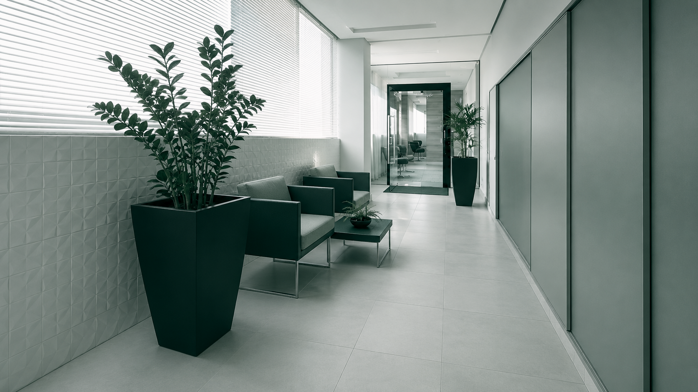
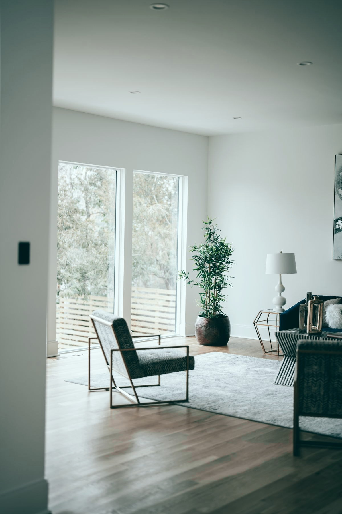
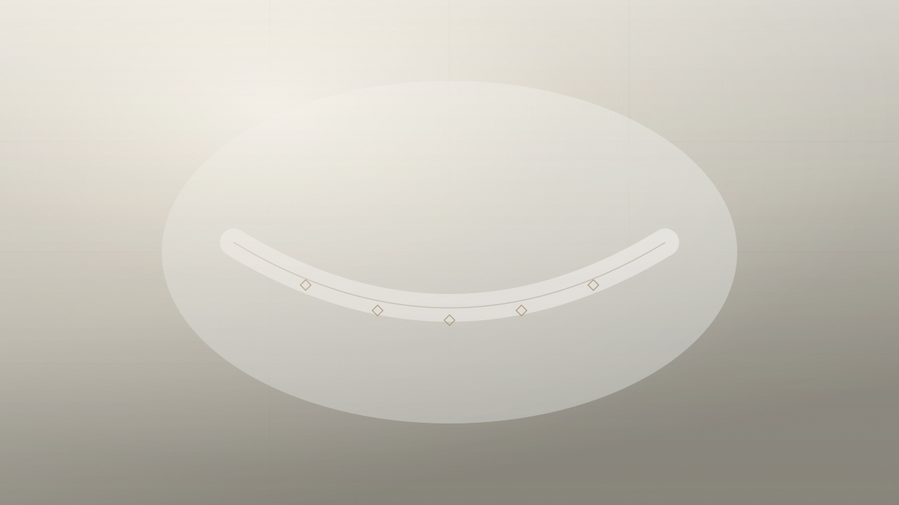
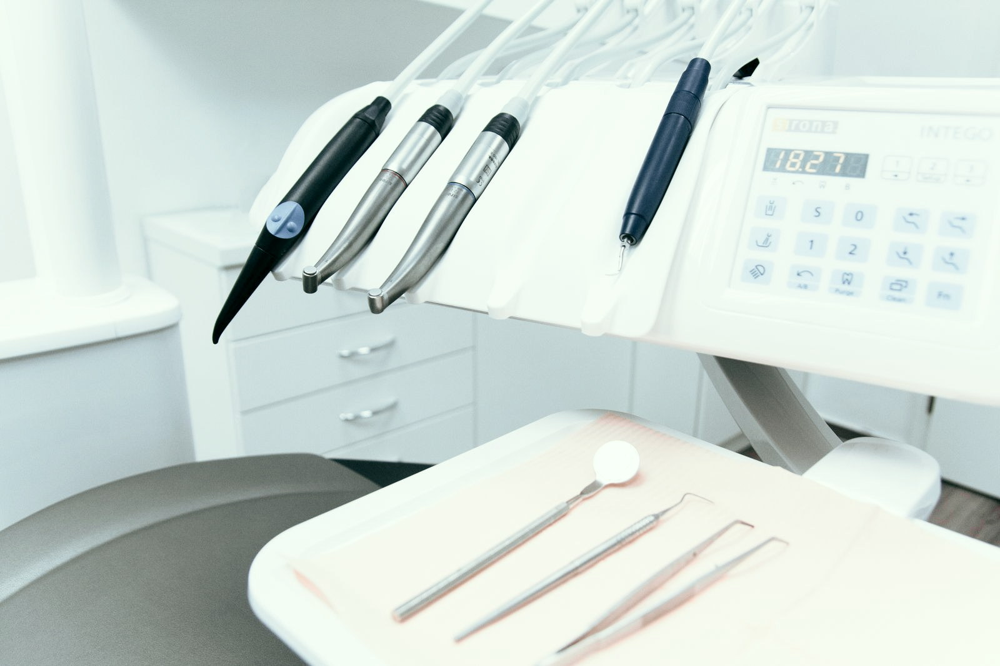

Implantes
Reposição unitária ou total, guiada por tomografia e cirurgia planejada em software antes do dia do procedimento.
Implantes
Odontologia estética e reabilitação oral
Planejamento digital antes de qualquer procedimento. Você vê o resultado projetado — e decide com o quadro completo na frente.
4,9 de 5 em 312 avaliações no Google

A Lumina nasceu de uma inquietação simples: pacientes chegavam ao consultório sem entender o que seria feito na própria boca. Invertemos a ordem. Primeiro o diagnóstico completo e o plano na tela — depois, só depois, o tratamento.
Nenhum valor é apresentado sem exame de imagem e plano escrito.
O especialista que planeja é o mesmo que executa e acompanha.
Você vê a simulação do resultado antes de autorizar qualquer etapa.
Casos que combinam mais de uma especialidade são planejados em conjunto, não em atendimentos separados.
Reposição unitária ou total, guiada por tomografia e cirurgia planejada em software antes do dia do procedimento.
ImplantesLâminas de porcelana de 0,3 mm. Simulação em 3D e ensaio no próprio sorriso antes de qualquer desgaste.
Lentes de contato dentalProporção e sustentação do terço inferior da face, tratada junto do sorriso e não como procedimento isolado.
Harmonização facialAlinhadores transparentes e aparelhos cerâmicos, com previsão de duração fechada na primeira consulta.
Ortodontia estéticaProtocolo de consultório ou supervisionado em casa, definido pela sensibilidade e pelo tom de partida de cada paciente.
ClareamentoIsto não é o resultado de um paciente — é o método. Arraste para comparar a moldagem física tradicional com a visualização do plano gerado a partir do escaneamento digital.

Nada aqui é novidade pela novidade. Cada aparelho está na clínica porque substitui uma etapa que antes dependia de estimativa.
Substitui a moldagem com pasta. O modelo digital sai em cinco minutos e não deforma no transporte até o laboratório.
Mostra volume ósseo em três dimensões — é o que permite planejar o implante antes da cirurgia, e não durante.
Peças provisórias no mesmo dia. Você não sai da clínica com espaço vazio depois de uma extração.

Eu já tinha desistido de dois orçamentos antes, porque ninguém me explicava o que ia acontecer. Aqui saí da primeira consulta com o plano impresso na mão e o valor fechado.
O que me convenceu foi ver a simulação antes. Não é promessa, é a imagem do que vai ficar — e ficou igual.
4,9 de 5 em 312 avaliações no Google
Nenhuma etapa começa antes da anterior estar fechada e aprovada por você.
Exame clínico, fotos e escaneamento. Uma hora, sem compromisso de fechar nada no mesmo dia.
Você recebe o plano por escrito, com simulação do resultado, prazo por etapa e valor fechado.
Execução com o mesmo especialista que planejou. Sessões agendadas em bloco, para reduzir o número de visitas.
Retornos em 7 dias, 3 meses e 1 ano, já incluídos no valor do tratamento.
Três especialistas, cada um responsável pelo próprio caso do começo ao acompanhamento.
Implantodontia e cirurgia guiada
CRO-SP 00000 · 14 anos de clínica
Dentística e reabilitação estética
CRO-SP 00000 · 11 anos de clínica
Ortodontia e harmonização facial
CRO-SP 00000 · 9 anos de clínica
A taxa de sobrevivência documentada em literatura passa de 95% em dez anos, quando há osso suficiente e acompanhamento regular. O que costuma falhar não é o implante e sim a manutenção — por isso os retornos entram no valor do tratamento.
Em boa parte dos casos o desgaste é mínimo ou inexistente. Só sabemos depois do escaneamento e do ensaio no seu próprio sorriso — e se o seu caso exigir desgaste maior, você é avisado antes de autorizar, não durante.
Não trabalhamos com convênios. Emitimos nota fiscal e o relatório clínico para reembolso, que a maior parte dos planos de reembolso aceita. Parcelamos em até 12 vezes.
Cerca de uma hora: exame clínico, fotografias, escaneamento e, se o caso pedir, tomografia feita na própria clínica. Você sai com diagnóstico. O plano por escrito chega em até três dias úteis.
Tem. Gestação, algumas doenças autoimunes e uso de determinados anticoagulantes entram na avaliação. Casos assim são recusados ou adiados — a avaliação inicial existe justamente para isso.
Uma hora de consulta, diagnóstico completo e nenhum compromisso de fechar tratamento no mesmo dia.
Segunda a sexta, 9h às 19h · Sábado, 9h às 13h · Pinheiros, São Paulo